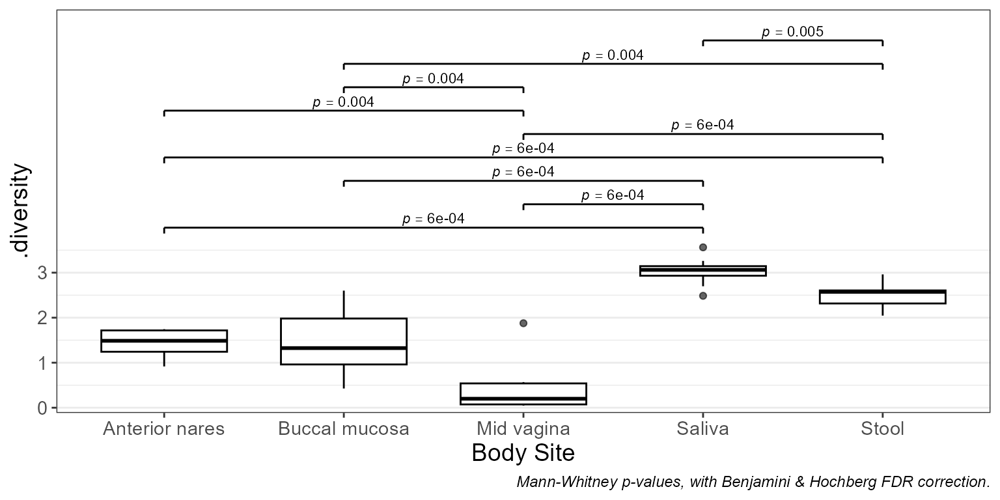
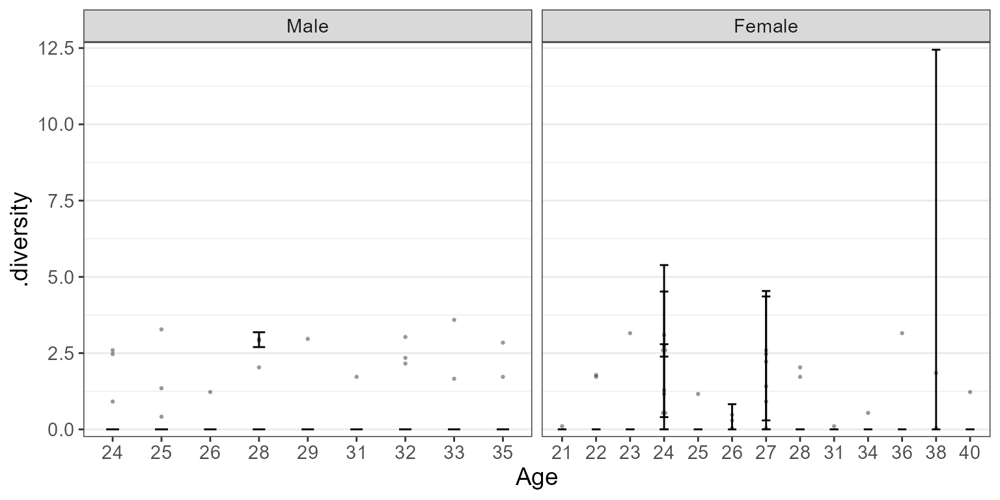

Visualize categorical metadata effects on numeric values.
Usage
stats_boxplot(
df,
x = NULL,
y = attr(df, "response"),
layers = "x",
stat.by = x,
facet.by = NULL,
colors = TRUE,
shapes = TRUE,
patterns = FALSE,
flip = FALSE,
stripe = NULL,
ci = "ci",
level = 0.95,
p.adj = "fdr",
outliers = NULL,
xlab.angle = "auto",
p.label = 0.05,
caption = TRUE,
...
)Arguments
- df
The dataset (data.frame or tibble object). "Dataset fields" mentioned below should match column names in
df. Required.- x
A categorical metadata column name to use for the x-axis. Or
NULL, which groups all samples into a single category.- layers
One or more of
c("bar", "box" ("x"), "violin", "dot", "strip", "crossbar", "errorbar", "linerange", "pointrange"). Single letter abbreviations are also accepted. For instance,c("box", "dot")is equivalent toc("x", "d")and"xd". Default:"x"- stat.by
Dataset field with the statistical groups. Must be categorical. Default:
NULL- facet.by
Dataset field(s) to use for faceting. Must be categorical. Default:
NULL- colors
How to color the groups. Options are:
TRUE- Automatically select colorblind-friendly colors.FALSEorNULL- Don't use colors.a palette name - Auto-select colors from this set. E.g.
"okabe"character vector - Custom colors to use. E.g.
c("red", "#00FF00")named character vector - Explicit mapping. E.g.
c(Male = "blue", Female = "red")
See "Aesthetics" section below for additional information. Default:
TRUE- shapes
Shapes for each group. Options are similar to
colors's:TRUE,FALSE,NULL, shape names (typically integers 0 - 17), or a named vector mapping groups to specific shape names. See "Aesthetics" section below for additional information. Default:TRUE- patterns
Patterns for each group. Options are similar to
colors's:TRUE,FALSE,NULL, pattern names ("brick","chevron","fish","grid", etc), or a named vector mapping groups to specific pattern names. See "Aesthetics" section below for additional information. Default:FALSE- flip
Transpose the axes, so that taxa are present as rows instead of columns. Default:
FALSE- stripe
Shade every other x position. Default: same as flip
- ci
How to calculate min/max of the crossbar, errorbar, linerange, and pointrange layers. Options are:
"ci"(confidence interval),"range","sd"(standard deviation),"se"(standard error), and"mad"(median absolute deviation). The center mark of crossbar and pointrange represents the mean, except for"mad"in which case it represents the median. Default:"ci"- level
The confidence level for calculating a confidence interval. Default:
0.95- p.adj
Method to use for multiple comparisons adjustment of p-values. Run
p.adjust.methodsfor a list of available options. Default:"fdr"- outliers
Show boxplot outliers?
TRUEto always show.FALSEto always hide.NULLto only hide them when overlaying a dot or strip chart. Default:NULL- xlab.angle
Angle of the labels at the bottom of the plot. Options are
"auto",'0','30', and'90'. Default:"auto".- p.label
Minimum adjusted p-value to display on the plot with a bracket.
p.label = 0.05- Show p-values that are <= 0.05.p.label = 0- Don't show any p-values on the plot.p.label = 1- Show all p-values on the plot.
If a numeric vector with more than one value is provided, they will be used as breaks for asterisk notation. Default:
0.05- caption
Add methodology caption beneath the plot. Default:
TRUE- ...
Additional parameters to pass along to ggplot2 functions. Prefix a parameter name with a layer name to pass it to only that layer. For instance,
d.size = 2ensures only the points on the dot layer have their size set to2.- test
Method for computing p-values:
'none','emmeans', or'emtrends'. Default:'emmeans'
Value
A ggplot2 plot.
The computed data points, ggplot2 command,
stats table, and stats table commands are available as $data,
$code, $stats, and $stats$code, respectively.
Aesthetics
All built-in color palettes are colorblind-friendly. The available
categorical palette names are: "okabe", "carto", "r4",
"polychrome", "tol", "bright", "light",
"muted", "vibrant", "tableau", "classic",
"alphabet", "tableau20", "kelly", and "fishy".
Patterns are added using the fillpattern R package. Options are "brick",
"chevron", "fish", "grid", "herringbone", "hexagon", "octagon",
"rain", "saw", "shingle", "rshingle", "stripe", and "wave",
optionally abbreviated and/or suffixed with modifiers. For example,
"hex10_sm" for the hexagon pattern rotated 10 degrees and shrunk by 2x.
See fillpattern::fill_pattern() for complete documentation of options.
Shapes can be given as per base R - numbers 0 through 17 for various shapes, or the decimal value of an ascii character, e.g. a-z = 65:90; A-Z = 97:122 to use letters instead of shapes on the plot. Character strings may used as well.
See also
Other visualization:
adiv_boxplot(),
adiv_corrplot(),
bdiv_boxplot(),
bdiv_corrplot(),
bdiv_heatmap(),
bdiv_ord_plot(),
plot_heatmap(),
rare_corrplot(),
rare_multiplot(),
rare_stacked(),
stats_corrplot(),
taxa_boxplot(),
taxa_corrplot(),
taxa_heatmap(),
taxa_stacked()
Examples
library(rbiom)
df <- adiv_table(rarefy(hmp50))
stats_boxplot(df, "Body Site")

stats_boxplot(
df = df,
x = "Age",
stat.by = "Body Site",
facet.by = "Sex",
layers = "trend" )
